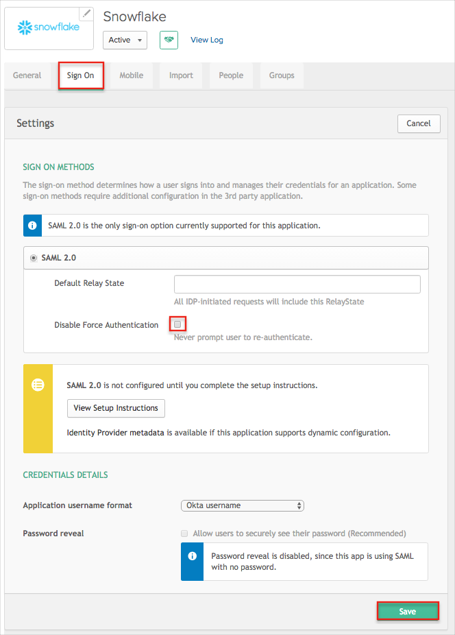
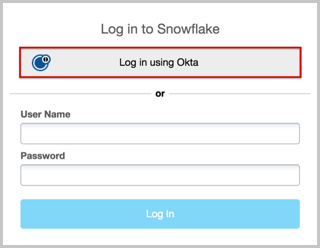

Click the link below to download the Certificate, and then attach the file to the email message.
Sign in to the Okta Admin app to generate this variable.
Attach the following IDP SSO URL to the email message.
Sign in to the Okta Admin app to generate this variable.
Attach the following IDP Issuer to the email message.
Sign in to the Okta Admin app to generate this variable.
In Okta select the Sign On tab for the Snowflake Computing app, then uncheck the Disable Force Authentication checkbox in order to enable Force Authentication for your users:

Done!
Notes:
IdP-initiated flows and SP-initiated flows are supported.
Just In Time (JIT) provisioning is not supported.
For SP-initiated flows:
Go to https://[YourSubDomain].snowflakecomputing.com/
Click the Log in using Okta button:
